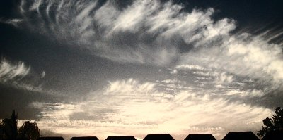
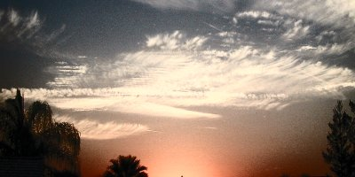

CloudsBakersfield, California
|
In this series one can see a distinct grid pattern form, intensify and broaden its geographic extent, then fade, over a period of 12 minutes.
| 8/29/2002 7:10:38 PM | |
| 8/29/2002 7:13:44 PM | |
 |
8/29/2002 7:15:14 PM |
| 8/29/2002 7:16:02 PM | |
 |
8/29/2002 7:17:33 PM |
| 8/29/2002 7:19:20 PM | |
| 8/29/2002 7:20:01 PM | |
| 8/29/2002 7:21:23 PM | |
| 8/29/2002 7:22:37 PM |
Note about the images. These photos were taken with a Canon PowerShot S100 digital camera at 1200x1600 resolution. They were cropped and enhanced using PaintShop Pro's "expand histogram" filter to bring out details that were obvious to the photographer's naked eye at the time of shooting but somewhat less discernible on a photograph, and then reduced in size for presentation on the web.